![bg height:100% a flowchart for the master method. Step one is telling you to formulate your problem as T(n)=AT(n/B) + f(n). Then we reach a decision: c_crit = (log A) / (log B). If f(n)=O(n^c), and c_crit > c, we go to case 1: T(n)=Theta(n^c_crit). If f(n) = Theta(n^c (log n)^k) and c_crit = c, we go to case 2: T(n) = Theta(n^c_crit * (log n)^(k + 1). If f(n) = Omega(n^c), and c_crit < c, we go to case 3, which has a decision to make. The decision: is there a k less than 1 such that A * f(n / B) = k * f(n)? If so, T(n) = Theta(f(n)), if not, we go to the crying cat emoji, indicatin that we will have to use another method to determine the running time)](master_chart.svg)
Slides © Grant Williams, CC BY-SA 4.0.
This is an open educational resource. Feel free to submit fixes, improvements, and new material here.
In this class, we’re going to learn an extremely common and important design technique for algorithms: divide and conquer.
We’re also going to learn how to analyze these algorithms for their runtime bounds. Our traditional proof techniques will work, but there’s a cool theorem that will analyze them for us much easier than an inductive proof.
Divide and conquer algorithms are algorithms that are broken up into three phases: 1. Divide: the data is broken into 2 or more pieces 2. Conquer: the problem is solved on at least one of the smaller pieces 3. Recombine (optional): the pieces are somehow merged back together
Sometimes this paradigm is called “divide-conquer-recombine”, but the recombine part is normally implied.
We often abbreviate it “D&C”.
Rather than keep this theoretical, let’s see an example of a common, useful D&C algo.
We’ll prove that it’s correct, prove its runtime bound the old fashioned way, and then see if we see any patterns as we explore other D&C algorithms.
The algorithm we look at first will be Mergesort.
However, to understand mergesort, we have to first understand merging.
Have you ever noticed that it’s faster to sort two lists that are already sorted than one list that isn’t sorted?
I notice this whenever I have to sort exams by student name. If I break the piles into pieces, maybe with a distribution sort, I can sort the small piles quickly, and then merge them all together.
But how does this work, and how fast is it?
Suppose we have two sorted lists: a = [1, 2, 3, 4],
b = [0, 1, 2, 5]
Each one is sorted, but they aren’t sorted with respect to each other. So we can’t just concatenate them.
Instead, there’s a simple algorithm we can use to combine them.
First, assume there is an array that is big enough to hold both of them:
buf = [_, _, _, _, _, _, _, _]
Then, we need to track three variables: a separate index or pointer
into a, b, and buf.
a = [1, 2, 3, 4], b = [0, 1, 2, 2], buf = [_, _, _, _, _, _, _, _]
^ ^ ^ Here, the carats
represent the indices. For screen narration, let i = 0 be
the index into a, j = 0 be the index into
b, and k = 0 be the index into
buf.
a = [1, 2, 3, 4], b = [0, 1, 2, 2], buf = [_, _, _, _, _, _, _, _]
^ ^ ^,
i = 0, j = 0, k = 0
First, we compare the elements at a[i] and
b[j]. We want to copy the smaller one into the buffer.
Specifically, always take a[i] if
a[i] <= b[i], otherwise take b[i]. * In
this case, b[i] is strictly smaller, so we copy it into the
buffer, and increment j, which stores how many elements
from b have been taken. We also increment k,
which stores how many elements have been written to the buffer.
a= [1, 2, 3, 4], b= [0, 1, 2, 2], buf = [0, _, _, _, _, _, _, _]
^ ^ ^,
i = 0, j = 1, k = 1
*: The reason it’s important to prioritize a is for
reasons of stability. We’ll talk about stability and why it’s useful
later.
a= [1, 2, 3, 4], b= [0, 1, 2, 2], buf = [0, _, _, _, _, _, _, _]
^ ^ ^,
i = 0, j = 1, k = 1
Now we compare a[i] == 1 with b[i] == 1.
These are equal, so we prefer to take from a. Again, this
is for reasons of stability, which we’ll talk about soon.
a= [1, 2, 3, 4], b= [0, 1, 2, 2], buf = [0, 1, _, _, _, _, _, _]
^ ^ ^,
i = 1, j = 1, k = 2
And then we take from b, because 1 < 2:
a= [1, 2, 3, 4], b= [0, 1, 2, 2], buf = [0, 1, 1, _, _, _, _, _]
^ ^ ^,
i = 1, j = 2, k = 3
[What happens next?]
take from a , because 2 <= 2:
a= [1, 2, 3, 4], b= [0, 1, 2, 2], buf = [0, 1, 1, 2, _, _, _, _]
^ ^ ^,
i = 2, j = 2, k = 4
then, the next two take from b, because both elements
are 2, while a[i]==3:
a= [1, 2, 3, 4], b= [0, 1, 2, 2], buf = [0, 1, 1, 2, 2, 2, _, _]
^ ~ ^,
i= 1, j= 4, k= 6
At this point, b has no more elements (I marked the
index with ~). So we can safely copy the rest of
a into buf at position k:
buf = [0, 1, 1, 2, 2, 2, 3, 4]
And now buf is sorted, and contains all the elements in
both a and b.
So, can we write merge in C?
I recommend doing it as a practice exercise later. I’m going to show you the code, but try doing it on your own without using the code as a reference.
Here’s a simple implementation…
merge in C (scrunched
to fit)void merge(const int* restrict lo, const int* restrict hi,
size_t n_lo, size_t n_hi, int* restrict merge_buf)
{
int i_lo = 0, i_hi = 0, i_merge = 0;
for (;;) {
if (i_lo == n_lo) { // done taking from lo
memcpy(merge_buf + i_merge, hi + i_hi, (n_hi - i_hi) * sizeof(int));
break;
} if (i_hi == n_hi) { // done taking from hi
memcpy(merge_buf + i_merge, lo + i_lo, (n_lo - i_lo) * sizeof(int));
break;
}
if (lo[i_lo] <= hi[i_hi]) { merge_buf[i_merge++] = lo[i_lo++]; }
else { merge_buf[i_merge++] = hi[i_hi++]; }
}
}mergeFirst, let’s look at the parameters: - lo and
hi are the two arrays we’re merging. They’re called that
because they will come from the low and high halves of an array. -
n_lo and n_hi are the lengths of the two
arrays. In practice, n_lo - n_hi <= 1, but we don’t need
that invariant for this function to work. - Lastly, we have a pointer to
the buffer that we’re going to be merging in to. This is a
restrict pointer, which you may not have seen before and
which we’ll talk about on the next slide.
restrict means that this pointer is the only
pointer that will be used to access the data it accesses. It is a
promise to avoid aliasing, which is when two or more pointers point to
the same thing.
If you say
int* restrict a = array1; int* restrict b = array2;, you’re
saying that a and b will never point to the same array.
Why is this useful? Because if they could point to the same data, then many optimizations don’t work.
For example, if we did not make the pointer restrict,
the compiler would have to reload the data from lo and
hi every time we wrote to merge_buf, because
it might have changed.
The restrict keyword in C only applies to pointers, so
it must go after the *.
Remember that const int* and int const*
both mean a pointer that points to a constant int, so the pointer can
change, but a new value cannot be written to the underlying memory. But
int* const means that the pointer itself is constant (it
cannot be moved to a different value) but the underlying value can be
changed.
Restrict works the same way. It is an error to say
restrict int* or int restrict*. It must come
after the *.
Note: when referring to a pointer to an int that is constant, people
who write const int* are called “left-consters”, and people
who write int const* are called “right-consters.” The main
benefit of being a right-conster is that the underlying types will line
up if you have a non-const type a line below a const type or vice versa.
The main drawback is that less experienced programmers will think that
you’re declaring a constant pointer. It’s also kind of weird that a
modifier is coming after the thing it modifies, which is why I don’t
usually do it.
merge (2)After our parameters, we get to the declarations and loop.
The first thing we check for is whether i_lo, which
stores how many things we have taken from the lo array, is
equal to n_lo, which is the total number of things in
lo.
int i_lo = 0, i_hi = 0, i_merge = 0;
for (;;) {
if (i_lo == n_lo) { // done taking from lo
memcpy(merge_buf + i_merge, hi + i_hi, (n_hi - i_hi) * sizeof(int));
break;
}If it is, we just copy the rest of it into
merge_buf.
We do the same thing with i_hi. If we’ve used up all the
elements of hi, we copy everything remaining from
lo.
merge (3)Finally we reach the main logic:
if (lo[i_lo] <= hi[i_hi])
merge_buf[i_merge++] = lo[i_lo++];
else
merge_buf[i_merge++] = hi[i_hi++];If the next element of lo is less than or equal the next
element of hi, we copy the next element of lo
to the buffer. Otherwise we copy the next element of
hi.
Eventually one of these arrays will be empty, and we’ll transition to the first part: copying over the rest of the other array.
And then we’re done.
How can we prove our merge is correct?
We need some kind of loop invariant. How about this one:
sorted(lo), sorted(hi), sorted(merge_buf[0 .. i_merge)),
everything in merge_buf <= lo, everything in merge_buf <= hi
So, basically, both our sub-arrays are sorted, our merge buffer so far is sorted, and everything in the merge buffer is smaller than everything in either sub array.
Is this true when lo is empty? Then we need this to be
true after:
sorted([]), sorted(hi), sorted(merge_buf[0 .. n))
everything in merge_buf <= lo (vacuous), everything in merge_buf <= hi
This checks out. n = len(lo) + len(hi).
Once lo is empty, we have
sorted(merge_buf[0 .. len(lo) + i_hi)] And this array is
less than everything remaining in hi. Then we concat the
rest of that array to the end. Solid!
The same applies when hi is empty conversely.
But what if neither lo or hi are empty?
Say that the front of lo is smaller or equal. We have
that everything in merge_buf <= lo. So that means,
merge_buf ++ [head lo] is sorted. And, we don’t violate our
everything in merge_buf <= hi assumption, because we
took something that was smaller than everything in hi.
Likewise, if the front of hi is smaller, the invariant
is maintained by the same logic.
We’ve shown that our loop invariant holds.
Once the loop finishes, merge_i == n_lo + n_hi, so the
entire array is sorted.
Merge is a useful algorithm, because it lets us, say, use different sorting algorithms and then stitch the results together.
But we can sort entirely by applying merge
recursively.
mergesort(arr) =
n = len(arr)
if n <= 1: return arr
first_hi = (n + 1) / 2 -- ceil of division
lo = arr[0 .. first_hi)
hi = arr[first_hi .. n)
lo = mergesort(lo)
hi = mergesort(hi)
return merge(lo, hi)First is our base case. Empty and singleton arrays are sorted, so just return.
Otherwise, we want to split the array into two pieces, its lower and upper halves.
If the array has an even length, we want both halves to be the same
size. On the other hand, if it’s odd, we want lo to be one
element bigger. (Proving that (n + 1) / 2 gives us this is
a practice exercise)
We then recursively apply mergesort on both halves.
Once it’s done, we merge the results together.
It seems strange to use recursion this way. We’re doing recursion before the main logic
That recursion will keep recursing. It will keep cutting the lists into halves. Eventually, the halves will be of size 1. Then we hit the base case.
Once the base case returns, we merge together two size-1 arrays. Then that returns and we end up merging together two size-2 arrays. And so on
Consider mergesort([5,3,1,2,4]) First, it splits into
mergesort([5,3,1]) and mergesort([2,4]) -
mergesort([5, 3, 1]) splits into
mergesort([5, 3]) and mergesort([1]) = [1] -
mergesort ([5, 3]) = mergesort([5]) = [5] and
mergesort([3]) = [3]. - We merge([5], [3]) to
get [3, 5] - we merge([3, 5], [1]) to return
[1, 3, 5] - mergesort([2, 4]) splits into
mergesort([2]) and mergesort([4]) - We
merge([2], [4]) to return [2, 4] - We
merge([1, 3, 5], [2, 4]) to get
[1, 2, 3, 4, 5]
void merge_sort_slow(int* arr, size_t n) {
if (n <= 1) return;
int hi_start = ((n + 1) >> 1);
merge_sort_slow(arr, hi_start);
merge_sort_slow(arr + hi_start, n - hi_start);
// the slow part:
int* merge_buf = malloc(n * sizeof(int));
merge(arr, arr + hi_start, hi_start, n - hi_start, merge_buf);
memcpy(arr, merge_buf, sizeof(int) * n);
free(merge_buf);
}We showed that merge works. How do we show that
merge_sort works?
We’re going to have trouble using regular (weak) induction: - The
base case is fine: mergesort([], 0) is sorted. - The
problem is the inductive case: suppose mergesort(arr, n)
works for some n and arr can we prove
mergesort([a] ++ arr, n + 1) works? The issue is that we
split our array in half. So we have: -
mergesort([a] ++ lo, (n + 2) / 2) -
mergesort(hi, n / 2)
But our inductive hypothesis only works for `mergesort(arr, n)`. Not `lo` or `hi`.Weak induction assumes that we can go from \(P(n)\) to \(P(n + 1)\).
That means, in this case we assume that something about
mergesort(arr, n) lets us prove
mergesort([a] ++ arr, n + 1).
But this isn’t how mergesort works! It’s not like insertion sort
where it uses the fact that the array was sorted up to i,
to generate a sorted array up to i + 1.
Instead, it breaks the array in half. We end up needing
mergesort([a] ++ half_sized_arr, (n + 2) / 2) as an
induction hypothesis, but we don’t have one!
Remember that weak induction for natural numbers worked like this: We ask the induction principle algorithm for a proof of \(P(2)\), where \(P\) is a proposition about a natural number. It recursively computes \(P(1)\).
The proof of \(P(1)\) recursively gets \(P(0)\), which we provided, and then it applies \(P(n) \implies P(n + 1)\) to generate \(P(1)\), which it returns.
Then the \(P(2)\) call takes \(P(1)\) and applies \(P(n) \implies P(n + 1)\) to it, yielding a proof of \(P(2)\).
The issue is that the machine assumes that each proposition only depends on the one before.
But, what if we wanted to prove \(P(10)\) using \(P(5)\)?
There’s really no reason why we shouldn’t be able to do this. If \(P(2)\) and \(P(3)\) depend on \(P(1)\), and \(P(4)\) depends on \(P(2)\), and \(P(5)\) depends on \(P(3)\), then by the time we reach a high number, a lower number has been proven.
If we could use \(P(5)\) in the proof of \(P(10)\), then we could prove that mergesort works for array size 10, because it works for 5. How do we know it works for 5?
Because we proved it worked for 3 and 2? How do we know that? Because we proved that it worked for 1.
The only wrinkle here is we had to prove it for 0 and also 1, because we cannot derive a proof of 1 from a proof of 0 in this case.
The only way that strong induction differs from weak induction is in the inductive case: \(\forall n \in \mathbb{N}, (\forall i \le n, P(i)) \implies P(n + 1)\)
Compare this to weak induction: \(\forall n \in \mathbb{N}, P(n) \implies P(n + 1)\)
Weak induction requires: “if we have proven the proposition for some number \(n\), we can prove it for \(n + 1\) Strong induction requires:”if we have proven the proposition for every number up to and including \(n\), we can prove it for \(n + 1\).
Let our proposition be that for natural numbers \(n\) and arrays arr, where
\(n\) is the length of
arr, mergesort(arr, n) leaves arr
sorted.
Does mergesort([], 0) work? Yes, it does. This is the
base case. There’s a second base-case here:
mergesort({a}, 1). This also works.
Now, here’s the key. We need to show: \((\forall i \le n, P(i)) \implies P(n + 1)\)
So we “suppose” that mergesort(arr', i) works, for all
up to and including mergesort(arr, n), and we need to show
that mergesort({a} ++ arr, n + 1) works.
Mergesort on \(n\) always breaks its array down into two pieces: - One of length \(n / 2\) or \(n / 2 + 1\) - One of length \(n / 2\)
Because these numbers are smaller than \(n\), we can assume that we have proven that mergesort works for \(n / 2\) and \(n / 2 + 1\)
Assuming that mergesort works, we end up with two sorted arrays,
lo and hi. We merge them together, and we have
already proven that merge works. Therefore, the result is a
sorted list for any n. \(\square\)
One more time, consider this: \(P(0)\) and \(P(1)\) were base cases. We know those work.
\(P(2)\) only needs \(P(1)\) to be proven. If mergesort works for \(n = 1\), then we know it works for \(n = 2\), because it will be split into two arrays of \(n = 1\), mergesort will work correctly for them (we proved it), and then merge will work (we proved it, too).
\(P(3)\) follows from \(P(2)\) and \(P(1)\), both of which are now proved. \(P(4)\) follows from \(P(2)\), which followed from \(P(1)\). \(P(5)\) follows from \(P(3)\) and \(P(2)\)
Notice how high values of \(n\) always follow from lower values of \(n\). This is why this induction principle is reasonable.
Prove that (n + 1) / 2 gives us the first element of
the second half. Use case analysis:
case 1: len(lo) = len(hi),
case 2: len(lo) = len(hi) + 1. Answer is in
mod4.c commented in the code for
merge_sort_slow.
Implement a faster merge sort that takes a pointer to a buffer and uses that instead of allocating.
Write a binary search procedure. Given a sorted list, it will determine whether \(i\) is in the list by binary searching. Prove that it is correct using strong induction. (If you don’t prove it, and you haven’t done binary search in a while, you very likely have a bug. Create a 100 element array of the numbers 1 to 100, and make sure every one of them is found in 7 checks or fewer)
What is mergesort’s recurrence relation?
[Can we guess it?]
\(T(0) = 1\) \(T(1) = 1\) \(T(n) = 2T(n / 2) + \Theta(n)\)
The \(\Theta(n)\) is from merge.
Why is merge \(\Theta(n)\)? Because it has to copy one elment for every value in a sub-array.
(I’m simplifying somewhat. Sometimes it’s not exactly cut in half, and one piece is one element longer than the other. Ignoring this will not change the big-\(\Theta\))
footnote: (If we wanted to be super rigorous, we’d use these inductive cases: \(T(2n) = 2T(n) + \Theta(2n), T(2n + 1) = T(n + 1) + T(n) + \Theta(2n + 1)\). This way we handle the fact that odd lists don’t break exactly evenly. The big-\(\Theta\) we get will be the same. )
Every time we split in half, we have to solve 2 subproblems.
Once we’re done with a sub-problem, we have to merge it back together, which takes \(\Theta(n)\) time.
The reason this is hard to analyze is that the size of \(n\) keeps changing. When we’re merging 2-element lists, it’s very different than when we merge 1024-element lists.
So how can we analyze this?
Let’s express each level of recursion as a row:
[4, 2, 7, 8, 1, 3, 6, 5] split in half
[4, 2, 7, 8][1, 3, 6, 5] split each half in half
[4, 2][7, 8][1, 3][6, 5] split each quarter in half
[4][2][7][8][1][3][6][5] we’re done splitting. This is
“conquer”
[2, 4][7, 8][1, 3][5, 6] now merge each 8th
[2, 4, 7, 8][1, 3, 5, 6] now we merge the quarters
[1, 2, 3, 4, 5, 6, 7, 8] merge the halves
Splitting is “divide”. Conquering here is just returning
[a]. Recombine is merge.
Question: how many rows will there be for each phase?
We want to count how many steps it takes to go from 1 array of \(n\) elements to \(n\) arrays of 1 element. That will be roughly half the number of rows.
For the first part: we’re asking “how many times can we halve \(n\) until it hits 1.”
This is the same as asking “how many times do we have to double 1 until it hits \(n\)”
This is the same as asking \(2^k = n\), solve for \(k\)
[What is this?]
That’s right, \(\lg n = k\)
So for \(n=8\), \(\lg 8 = 3\). There will be three transformations: \(8 \to 4\), \(4 \to 2\), and \(2 \to 1\).
This is the divide phase. We do \(2\) recursive calls, then \(4\), then \(8\), for a total of \(14\).
Once we hit 8 arrays of 1, we go the other way: \(2 \times 1 = 2\), \(2 \times 2 = 4\), \(2 \times 4 = 8\)
This is the recombine phase. We write a byte for each element. \(3\) rows, \(8\) elements each.
Quick question: which one takes more \(\Theta(1)\) operations?
In this case, recombining is slower, but both phases are \(\Theta(n \lg n)\).
In short: doubling the number of rows will mean doubling the number of splits, and also doubling the number of merged integers. So they grow at the same rate.
In some D&C algorithms, dividing takes more work. In others, recombining is slower. It turns out we typically get logarithms as the big-\(\Theta\) when they’re about the same speed.
Now that we’ve determined that mergesort is likely \(\Theta(n \lg n)\), let’s prove it. But first…
Do the previous merge-sort analysis on \(n=4\) and \(n=16\). That is, sketch the number of elements visually, and then verify that dividing takes \(\lg n\) rows and recombining takes \(\lg n\) rows
Are there any values for \(n\) where that formula doesn’t work?
The purpose of drawing a sketch of how many rows and columns there are was to give us a proposition for induction. Remember: it’s called induction because induction is how we come up with the goal, not because there’s anything inductive about the proof.
Here is the recurrence relation: \(T(0) = 1\) \(T(1) = 1\) \(T(n) = 2T(n / 2) + \Theta(n)\)
The proposition we want to prove is: \(T(n) = \Theta(n \lg n)\)
Let’s start with \(T(n) = O(n \lg n)\). I’ll leave \(T(n) = \Omega(n \lg n)\) to you.
We can prove this using strong induction. But we don’t know what values to use for \(n_0\) and \(C\). Let’s just pretend we chose them so we can solve for them.
We want to show: \(\forall n \ge n_0, T(n) \le C(n \lg n)\)
We need to use induction, so let’s write our subgoals: \(0 \ge n_0 \implies T(0) = 1 \le C(n \lg n)\) \(\forall n, (\forall i \lt n, i \ge n_0 \implies T(i) \le C(i \lg i)) \implies n \ge n_0 \implies T(n) \le C(n \lg n)\)
Slight of hand warning: I modified the strong inductive principle. Instead of showing that if we prove \(P(0)\) up to \(P(n)\) that it implies \(P(n + 1)\), I changed it to if we prove \(P(0)\) up to \(P(n - 1)\) it implies \(P(n)\). This is equivalent, and it makes the math nicer for mergesort.
\(0 \ge n_0 \implies 1 \le C(0 \lg 0)\)
Is the conclusion true? It’s not true for \(n_0 = 0\). Because \(\lg 0\) is undefined.
If we choose \(n_0 = 1\), it’s vacuously true, becuase \(0 \lt 1\).
We actually don’t want vacuous truth here because of the inductive step. If we pick \(n_0 = 1\), then, when we want to (in the next step) show \((\forall i \le n, P(i)) \implies P(n + 1)\), we actually won’t be able to. \(P(0) \implies P(1)\) is false with \(n_0 = 1\), becuase \(P(1)\) is \(1 \le C(1 \lg 1) = 0\). Basically there will be no \(C\) we can pick.
Therefore we have to choose \(n_0 = 2\)
As a rule, when using strong induction, we usually want to actually find the first non-vacuous case.
\((\forall i \lt n, n \ge 1 \implies T(i) \le C(i \lg i)) \implies n \ge n_0 \implies T(n) \le C(n \lg n)\)
We start by supposing this hypothesis: \((\forall i \lt n, i \ge n_0 \implies T(i) \le C(n \lg n))\)
Then we suppose \(n \ge 2\). We must show \(T(n) \le C(n \lg n)\)
Let’s simplify \(T(n) = 2\cdot T({n \over 2}) + \Theta(n)\). We’re assuming integer division.
Now, because of our inductive hypothesis, we can assume the proposition is true for \(T({n \over 2})\). That is: \(T({n\over 2}) \le C {n \over 2}\lg {n \over 2}\)
Now, every time we see \(T({n \over 2})\) we can replace it with \(C {n \over 2}\lg {n \over 2}\) and get something bigger. We can use this to build an inequality. This is called the substitution method.
Start with \(T({n\over 2}) \le C \cdot {n\over 2}\lg {n\over 2}\), this is the induction hypothesis. \(\implies 2 \cdot T({n\over 2}) \le C \cdot n\lg {n\over 2}\) \(\implies 2 \cdot T({n \over 2}) \le C \cdot n \lg {n\over 2} = C\cdot n \lg n - \lg 2 = C \cdot n \lg n - 1\) \(\implies 2 \cdot T({n \over 2})+ 1 \le C n\lg n\) \(\implies2 \cdot T({n \over 2})+ 1 + an \le C n\lg n + an\) \(\implies2 \cdot T({n \over 2})+ 1 + an \le C n\lg n + an\)
Why did we add \(an\)? Because it’s a family of functions in \(\Theta(n)\), with the same leading term. So this shows: \(2 \cdot T({n \over 2})+ 1 + \Theta(n) \le C n\lg n + an = O(n \lg n)\) \(\square\)
Let’s take a (brief) breather from sorting algorithms and consider something simpler.
Here is a binary search tree node structure:
typedef struct node_t {
struct node_t *l, *r;
void* data; // we don't care about this field for the exercise
} Node;Do you recall how to count the number of nodes in the tree?
size_t count_nodes(Node* root) {
if (!root) return 0;
return count_nodes(root->l) + count_nodes(root->r) + 1;
}Prove it? By strong induction on the size of the tree \(n\): - When \(n =
0\), the tree is empty and count_nodes returns 0. -
The size of the two subtrees are both smaller than the whole tree, so by
the strong inductive hypothesis: if count_nodes(l) and
count_nodes(r) are correct, then
count_nodes(l) + count_nodes(r) + 1 adds the nodes in both
sides of the tree, plus the root.
It doesn’t really matter how the tree looks, but to keep the analysis simple, let’s assume it’s balanced and complete.
How does this look?

During the divide phase, we have two recursive calls per inner node. There are 7 inner nodes, so that’s 14 recursive calls.
For 7, there are 6 recursive calls. For 3 there are 2.
In general, there will always be \(\lfloor n / 2 \rfloor\) inner nodes in a balanced, complete tree, and therefore \(2 \cdot \lfloor n / 2 \rfloor\) function calls.
What about the recombine phase? It’s just an addition. That’s \(\Theta(1)\)
The recurrence relation for balanced trees is therefore: \(T(0) = 1\) \(T(n) = 2 \cdot T(n / 2) + 1\)
Looks similar to the mergesort case, but that \(1\) instead of a \(\Theta(n)\) changes things.
So what do you think? We have \(n\)-ish recursive calls, but recombining happens once per inner node.
That’s \(\Theta(n) + \Theta(n) = \Theta(n)\)
Are you convinced that this is \(\Theta(n)\)?
This time, the divide phase was more expensive than the recombine. Therefore we’re basically counting the number of divisions.
For mergesort, they were about the same. We would divide proportional to \(n\) times, but then each recombine took \(\Theta(n)\) for the number of elements in the recombine. The fact that the recombine got more expensive depending on how many times we had split was where the \(\lg n\) factor came from.
I’m going to hold off on proving this one. You’ll see why.
Suppose we want to find the \(k^{th}\) largest value in a list of \(n\) items.
(This is a common tech-interview question. You can also efficiently solve it with an \(n\)-sized min-heap)
The naive approach is to just sort the list and take the middle. That will not pass you the tech interview. Instead, we can improve on the time it takes to sort by recognizing that we don’t need the whole list to be sorted. We just need to know the top \(k\).
Think of it like this: it you want to know the max, it’s clearly \(\Theta(n)\). What if you want the \(2^{nd}\) largest? It should be almost as fast.
One way to do it is with the quickselect algorithm.
Suppose the list has \(n=15\), and we want the 13th smallest value. (the 3rd largest)
Suppose we have the ability to magically determine the median value (we don’t, but pretend we do).
We can split the list into three pieces: \(\lt\) median ++ median
++ \(\ge\) median
Suppose the values are all different. We expect the lower half to have 7 elements, and the upper half to have the same.
How does that help us?
Because now we know the 13th smallest value is in the upper list.
In fact, the 13th smallest of the whole list is the 5th smallest value in the upper list, because we know all 8 of the other values are not included in the upper list.
list: 1, 2, 3, 4, 5, 6, 7, 8, 9, 10, 11, 12, 13, 14, 15
low: 1, 2, 3, 4, 5, 6, 7, mid: 8, high:
9, 10, 11, 12, 13, 14, 15
Notice that 13, which is the 13th smallest value in the
whole thing, is actually number 5 in the high list.
(Note: obviously if the list is sorted we can easily find the 13th smallest value, but the algorithm I’m showing you works even if it’s unsorted.)
Now what? We recurse. We’re looking for the 5th smallest value in…
list: 9, 10, 11, 12, 13, 14, 15 low:
9, 10, 11, mid: 12, high:
13, 14, 15
There are 3 values in the lower list, and 1 in the middle. We want
the 5th, so we know that it is in the upper list. But because it’s in
the upper list and there are 4 smaller values, We don’t want the 5th
smallest, we want the 1st smallest in the upper list: list:
13, 14, 15 low: 13, mid: 14,
high: 15
list: 13, 14, 15 low: 13, mid:
14, high: 15
Here, the midpoint gives us a number that’s too large, so we know the solution is in the lower list. When the solution is in the lower list, we don’t subtract the number of items from the one we’re looking for.
list: 13 at this point, we want the 1st smallest value
in 13, which is 13. We found it!
Of course, we don’t magically have the ability to know the median. But we can get pretty close.
We can randomly choose a number in the array, and then put all the values smaller to the left, and all the values greater or equal to the right.
Sometimes the left array will be tiny, and sometimes the right array will be tiny. However, we might get lucky and have the value we’re looking for be in the tiny part. That would really speed things up.
Here’s a simple partition in C, based on Tony Hoare’s partition method:
size_t partition(int* arr, size_t n) {
if (n <= 1) return 0;
int r = arr[n - 1]; // choose the last element to be the pivot
size_t i_lo = 0, i_hi = n - 2; // it's n - 2 because n - 1 is the pivot
for (;;) {
// find the first value bigger than the pivot, and the last smaller
while (i_lo < n && arr[i_lo] < r) i_lo++; // could remove 1st check
while (i_hi > 0 && arr[i_hi] >= r) i_hi--;
if (i_lo < i_hi) swap(arr + i_lo, arr + i_hi);
else break;
}
swap(arr + i_lo, arr + n - 1); // put the pivot into position
return i_lo;
}First, we select a “pivot”, which is the value we want to be in the middle.
Actually figuring out the median would require us to sort the array, which is typically \(\Theta(n \lg n)\), which is not good.
Instead we just guess randomly and assume it’s the last element.
Then, we enter a loop: for(;;) ...
The first while loop searches for the first value that is smaller than the pivot:
while (i_lo < n && arr[i_lo] < r) i_lo++;The second searches for the last value that is at least as big as the pivot:
while (i_hi > 0 && arr[i_hi] >= r) i_hi--;Once we find both values, we swap them. This puts them in order.
if (i_lo < i_hi) swap(arr + i_lo, arr + i_hi);
else break;We want everything smaller than the pivot to the left. Once
i_lo >= i_hi, we’re done. The small values are on the
left.
The last thing we do is
swap(arr + i_lo, arr + n - 1); // put the pivot into position
return i_lo;This makes it so that the pivot is actually greater than everything to its left and less than or equal to everything to its right.
We haven’t sorted the list, but we’ve sorted the pivot.
Prove that partition results in an array in which every element
arr[0..p) \(\lt\)
arr[p] and arr[p + 1..n) \(\ge\) p.
Implement quickselect using this partition. This is in
mod4.c.
Prove that it works.
In the best case, quickselect finds the kth value instantly (it’s the pivot). So \(\Theta(1)\)
In the worst case, either the pivot keeps being the biggest value and we want the smallest, or vice versa. This means we pivot \(n\) times, and pivot is \(\Theta(n)\), so it ends up being \(\Theta(n^2)\) worse case.
But what is its average case? It’s when there are an equal number of values on either side of the median.
\(T(0) = 1\) \(T(n) = T(n / 2) + \Theta(n)\)
Interesting. So we split it in half, but only once. Then we do something that takes roughly \(n\) time.
Imagine we have \(n = 64\). We partition the \(64\), then identify which half has our value. Then we partition the \(32\), then split roughly in half. Then we partition \(16\)… \(8\)…\(4\)…\(2\)…\(1\)… and we found it.
In total, we have to process roughly \(64 + 32 + 16 + 8 + 4 + 2 +1\) values. Which is \(127\).
It’s not a coincidence that this is \(2n - 1\).
This algorithm ends up being \(\Theta(n)\). Again, we’ll prove it later.
Mergesort had this recurrence: \(T(0) = T(1) = 1\) \(T(n) = 2\cdot T(n / 2) + \Theta(n)\)
count_nodes had this recurrence for the balanced case:
\(T(0) = 1\) \(T(n) = 2\cdot T(n / 2) + 1\)
and quickselect had this recurrence for the average case: \(T(0) = 1\) \(T(n) = T(n / 2) + \Theta(n)\)
Notice any patterns?
Every divide and conquer algorithm has a recurrence relation that looks like this: \(T(n) = A\cdot T(n / B) + f(n)\)
\(A\) is the number of splits we make \(B\) is the size of each split. I.e., are we splitting in half, splitting in thirds, etc. \(f(n)\) is the function we do to recombine.
It turns out that knowing just \(A\), \(B\), and \(f(n)\), we can totally characterize the big-\(\Theta\) of the algorithm.
There’s a theorem, called the “Master Theorem” that tells us how…

This relation looks like \(3 \cdot T(n / 3) + f(n)\)The question is, how much work is \(f\) doing?
It gets called for every inner node. That is, for every row except the last one. And each row down, it does less work. How many rows are there?
How many times can you split before reaching the leaves? In this case: \(\log_3(n)\). In general \(\log_B(n)\)
And how many nodes will there be on each row? In this case, row \(r\), starting at \(0\), will have \(3^r\) elements. In general: \(A^r\) nodes per row.
At row \(r\), each node has \((n / 3^r)\) elements. \((n / B^r)\) in general.
So, in general, we invoke \(f\) like this: \(f(n) + A(f(n / B)) + A^2(f(n / B^2)) + \ldots=\large \sum_{i = 0}^{(\log_B n) - 1}(A^{i}f(n/B^{i}))\)
But that’s not the only source of work we need to care about
When we reach a leaf, D&C algorithms end up being expressed as: \(T(0) = c\), or \(T(1) = d\), or some kind of constant time base case. The key is that however many leaves there are, that’s how many times we will call \(T(1)\).
How many times does that happen?
This computation is easier: it’s once per leaf. And there are \(A^{\log_B n}\) leaves.
So we have a term: \(A^{\log_B n}\).
Therefore, the total amount of work our algorithm will do is: \(\large \sum_{i = 0}^{(\log_B n) - 1}(A^{i}f(n/B^{i})) + A^{\log_B n}\) for some constants \(A\) and \(B\)
This is a sum of two terms. So if one side dominates the other, then that’s the big-\(\Theta\)
How do we know if one side dominates the other?
(*) I’m using Wikipedia instead of the book for this definition.
At level \(i\) of the recursion tree, there are \(A^i\) nodes.
Suppose there is a function \(g\) that approximates the amount of work at a node: \(f(n) \approx g(n) = \Theta(n^c)\) for some \(c\).
Then the cost per node is \(\Theta(n / B^i)^c\). So the cost per row is \(\Theta(n^c \cdot A^i/B^{ic})\).
Let \(L=\log_B n\), how do we get \(\sum_{i = 0}^{L - 1} \Theta(n^c \cdot A^i/B^{ic})\)?
First, we can factor out \(n^c\), and factor in the sum: \(\Theta(n^c \cdot \sum_{i = 0}^{L - 1} A^i/B^{ic}) = \Theta(n^c \cdot \sum_{i = 0}^{L - 1} (A/B^c)^i)\)
Now, let’s add the other term back in to get our \(T(n)\) expression: \(T(n) = \Theta(n^c \cdot \sum_{i = 0}^{L - 1} (A/B^c)^i) + A^L\)
We’re close. We want both terms to have a base of \(n\). Then we can compare them.
We use the exponent/log swap trick: \(A = B^{\log_B A}\), \(A^L = A^{\log_B n} = (B^{\log_B A})^{\log_B n}=(B^{\log_B n})^{\log_B A}\)
And \(B^{\log_B n}\) is just \(n\), so: \(A^L = n^{\log_B A}\) So now we have:
\(T(n) = \Theta(n^c \cdot \sum_{i = 0}^{L - 1} (A/B^c)^i) + \Theta(n^{\log_B A})\)
\(T(n) = \Theta(n^c \cdot \sum_{i = 0}^{(\log_B n) - 1} (A/B^c)^i) + \Theta(n^{\log_B A})\)
Now look at that sum. It’s a geometric series with \(r = A / B^c\) So everything hinges on that ratio: \(r=A/B^c\)
One last substitution will give us something to make a decision on…
Let \(c_\mathrm{crit} = \log_B A\), then \(A=B^{c_\mathrm{crit}}\) So \(r=A/B^c=B^{c_\mathrm{crit}}/B^c=B^{c_\mathrm{crit} - c}\)
\(T(n) = \Theta(n^c \cdot \sum_{i = 0}^{(\log_B n) - 1} (B^{c_\mathrm{crit} - c})^i) + \Theta(n^{c_\mathrm{crit}})\)
If \(A/B^c \lt 1\), that’s equivalent to saying \(B^{c_\mathrm{crit}} \lt B^c \equiv B^{c_\mathrm{crit} - c} \lt 1 \equiv C_\mathrm{crit} \gt c\)
If \(C_\mathrm{crit} \gt c\), \(r\lt 1\), so the sum is going to result in a constant: \(T(n) = \Theta(n^c \cdot \sum_{i = 0}^{L - 1} (A/B^c)^i) + \Theta(n^{c_\mathrm{crit}}) = \Theta(n^c)+ \Theta(n^{c_\mathrm{crit}})\)
If \(c_\mathrm{crit} \gt c\), the whole thing simplifies to:
\(T(n)=\Theta(n^{c_\mathrm{crit}})\)
That is, if \(T(n) = A\cdot T(n / B) + O(n^c)\), and \(\log A / \log B \gt c\), then \(T(n) = \Theta(n^{c_\mathrm{crit}})\)
In other words: the work we do inside the tree is much smaller than the total number of leaves, so the number of leaves ends up being the big-\(\Theta\)
If \(A/B^c = 1\), that’s equivalent to saying \(C_\mathrm{crit} = c\)
The thing inside the sum \(= 1\), so we end up with a logarithm factor. Recall \(L=\log_B n\)
\(T(n) = \Theta(n^c \cdot \sum_{i = 0}^{L - 1} (A/B^c)^i) + \Theta(n^{c_\mathrm{crit}}) = \Theta(n^c\cdot \log_B n) + \Theta(n^{c_\mathrm{crit}})= \Theta(n^c\cdot \log_B n)\)
We assumed that \(f(n) = \Theta(n^c)\) to derive case 1, but If our original function had factors of \(\log n\) in it, that is, if \(f(n) = \Theta(n^c (\log n)^2)\) then we would end up with one more log power: \(T(n) = \Theta(n^c (\log n)^2 \cdot \sum_{i = 0}^{L - 1} (A/B^c)^i)=\Theta(n^c(\log n)^2 \cdot \log n) = \Theta(n^c \cdot (\log n)^3)\)
In general, if \(T(n) = A \cdot T(n / B) + \Theta(n^c (\log n)^k)\) and \(c = \log A / \log B\), \(T(n) = \Theta(n^c (\log n)^{k + 1})\)
Note: most of the time, \(k\) will be \(0\). This will make \(\log n\) magically appear.
If \(A/B^c \gt 1\), that’s equivalent to saying \(C_\mathrm{crit} \lt c\)
Here, the thing inside the sum is \(\gt 1\). This means that we’re doing more work inside the tree than we are at the leaves. This is the least common case.
Recall that \(A/B^c = B^{c_\mathrm{crit} - c}\), so \(T(n) = \Theta(n^c \cdot \sum_{i = 0}^{L - 1} (A/B^c)^i) + \Theta(n^{c_\mathrm{crit}})\) \(= \Theta(n^c \cdot (1 + B^{c_\mathrm{crit} - c} + (B^{c_\mathrm{crit} - c})^2 + \ldots) + \Theta(n^{c_\mathrm{crit}})\)
In that big-\(\Theta\), only the largest term actually matters. So it ends up being
\(=\Theta(n^c \cdot (B^{c_\mathrm{crit} - c})^L) + \Theta(n^{c_\mathrm{crit}}) = \Theta(n^c \cdot (B^{c_\mathrm{crit} - c})^L)\), which was all an approximation of \(f(n)\) (this was an early substitution we made).
Therefore, if \(T(n) = A\cdot T(n / B) + f(n)\), where \(f(n)=\Omega(n^c)\) and \(c \gt c_\mathrm{crit}\), \(T(n) = \Theta(f(n))\)
Basically, the recombining is so expensive that it ends up dominating everything.
Except there’s a special condition, called a regularity condition. There must be a \(k \lt 1\): \[ A\cdot f({n \over B}) \le k \cdot f(n) \]
Why? Because we want to ensure that the work at the root is bigger than the work at the other inner nodes. If it is, then the work at the root node dominates all the others. If it’s not, then there’s not an obvious bound, and we need to use another technique.
Then we can’t use the master theorem. Sorry.
Try to express your problem as: \(T(n) = A\cdot T(n / B) + f(n)\), where \(A\) and \(B\) are constant. (If you can’t, the master method does not apply) Let \(c_\mathrm{crit} = {\log A \over \log B}\) 1. If \(f(n) = O(n^c)\) and \(c_\mathrm{crit} \gt c\) Then \(T(n) = \Theta(n^{c_\mathrm{crit}})\) 2. If \(f(n) = \Theta(n^{c_\mathrm{crit}}\cdot (\log n)^{k})\) and \(c_\mathrm{crit} = c\) Then \(T(n) = \Theta(n^c \cdot (\log n)^{k + 1})\) 3. If \(f(n) = \Omega(n^c)\) and \(c_\mathrm{crit} \lt c\) and \(\exists k, A\cdot f(n / B) \le k \cdot f(n)\) Then \(T(n) = \Theta(f(n))\) 4. Otherwise, you can’t use the master method
count_nodesRemember count_nodes? When it’s balanced: \(T(n) = 2\cdot T(n / 2) + 1\)
\(c_\mathrm{crit}=\log 2 / \log 2 = 1\) \(f(n) = 1 = O(n^0)\)
\(1 \gt 0\), so we’re in case 1: \(T(n) = \Theta(n^{c_\mathrm{crit}}) = \Theta(n^1)\)
That’s it, we don’t have to prove anything by induction.
mergesortIs mergesort really \(\Theta(n \lg n)\)?
\(T(0) = T(1) = 1\) \(T(n) = 2 \cdot T(n / 2) + \Theta(n)\)
\(c_{\mathrm{crit}} = \log 2 / \log 2 = 1\) \(f(n) = \Theta(n^1 \cdot (\log n)^0)\) \(c = 1 = c_\mathrm{crit}\)
Case 2: \(T(n) = \Theta(n (\log n)^1) = \Theta(n \lg n)\)
Yup, it is. No messy induction or substitution.
quickselectWhat on earth is quickselect in the average case?
\(T(0) = 1\) \(T(n) = 1 \cdot T(n / 2) + \Theta(n)\)
\(c_\mathrm{crit}=\log 1 / \log 2 = 0\) \(f(n) = \Theta(n) = \Omega(n^1)\) \(c = 1, c_\mathrm{crit} = 0, c_\mathrm{crit} \lt c\)
\(\exists k \lt 1, A \cdot n / B \le k \cdot n\)? \(n / 2 \le k n\), choose \(k=1/2\), it holds. We’re in case 3: \(T(n) = \Theta(n)\)
Quicksort is just like quickselect, but after partitioning we just quicksort each side.
I’m going to pick 4 recurrence relations. Your job will be to use the master theorem to find their big-\(\Theta\) if applicable, or say “cannot use master method if not”
For \(c_\mathrm{crit}\), you can use whatever logarithm base you want, as long as you use it for the numerator and denominator.
For example: for \(T(n) = 3 \cdot T(n / 9) + n\), \(c_\mathrm{crit} = \log_3 3 / \log_3 9 = 1 / 2\)
Ponder these. All of them have definite solutions, and are solvable using math you know. I consider these to be reasonable exam problems (I would include the hints), but you’ll want to study them.
In the 1890’s, Herman Hollerith invented the card sorter.
You would record data records on a punch-card, containing, e.g., census information.
The cards had a grid that could have holes punched. For example, if you were tabulating peoples’ ages, you could punch a “3” in one row and a “2” in another to record “32”, along with other data.
These cards could then be sorted into physical buckets, where a card counter could tabulate them. So you could know the number of people who were 32.
The operator would place the cards in hoppers and run the machine.
The machine would sort one column into buckets. Say, the leading digit.
The operator could then take 1 bucket, e.g., the 3 bucket, set up 10 empty buckets, set the machine to sort on the next column, and dump the 3 bucket back into the hopper.
Now the new buckets would have all the 30s, 31s, 32s, etc.
These could each be tabulated by a card counter.
Assume that we can sort into \(10\) buckets.
If we have \(10\) values to sort, we sort them in one pass.
If we have \(100\) values to sort, we sort them in \(1 + 10 \times 1 = 11\) passes. (i.e., \(1\) pass to give \(10\) buckets of \(10\) each. For each one, \(1\) pass)
If we have \(1000\), we sort them in \(1 + 10\times (1 + 10\times 1)=111\)
If we have \(10000\), we sort them in \(1 + 10\times (1 + 10\times (1 + 10))=1111\)
Write the recurrence relation:
\(T(<= 10) = 1\) \(T(n) = 10\cdot T(1/10) + 1\)
Applying the master theorem, this is \(\Theta(n \lg n)\) But the fan-out is so wide, it feels almost linear!
This is called radix sort. What’s cool is we can pick the radix: - Base-2 means we sort the numbers based on a binary digit. - Base-4 means we sort the numbers based on 2 binary digits grouped together. - Base-16 means we sort on hex digits. a 32-bit number would be sorted in 8 passes.
---
config:
theme: redux
---
flowchart TD
A["mergesort([5,3,1,2,4])"]
A --> AL["mergesort([5,3,1])"]
AL --> ALL["mergesort([5, 3])"]
ALL --> ALLL["[5]"]
ALL --> ALLH["[3]"]
AL --> ALH[1]
A --> AH["mergesort([2,4])"]
AH --> AHL["[2]"]
AH --> AHH["[4]"]
ALLL & ALLH --> B35("merge([5], [3]) = (3, 5)")
B35 & ALH --> B135("merge([3,5], [1]) = [1,3,5]")
AHL & AHH --> B24("merge([2], [4]) = [2, 4]")
B135 & B24 --> RESULT("merge([1, 3, 5] [2, 4]) =
[1, 2, 3, 4, 5]")
-->---
config:
theme: redux
---
flowchart TD
A["T(n)=A·T(n/B) + f(n)"] --> CC
CC@{ shape: diamond, label: "c_crit =\n (log A) / \n(log B)" }
CC --> |"f(n)=O(n^c)
c_crit > c"| C1
C1["Case 1:
T(n)=ϴ(n^c_crit)"]
CC --> |"f(n)=ϴ(n^c·(log n)^k)
c_crit = c"| C2
C2["Case 2: T(n)=
ϴ(n^c_crit·(log n)^(k+1))"]
CC --> |"f(n) = Ω(n^c)
c_crit < c"| C3
C3@{shape: diamond, label: "Ǝk<1,
Af(n/B) <=
k·f(n)?"}
C3 --> |"yes"| C3Y
C3Y["T(n)=ϴ(f(n))"]
C3 --> |"no"| C3N
C3N["<font size= 10>😿"]{kind=link}